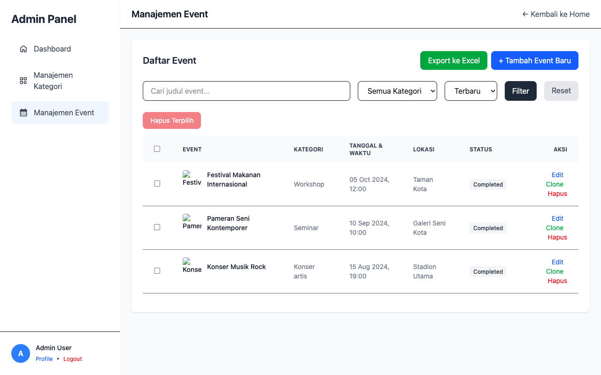
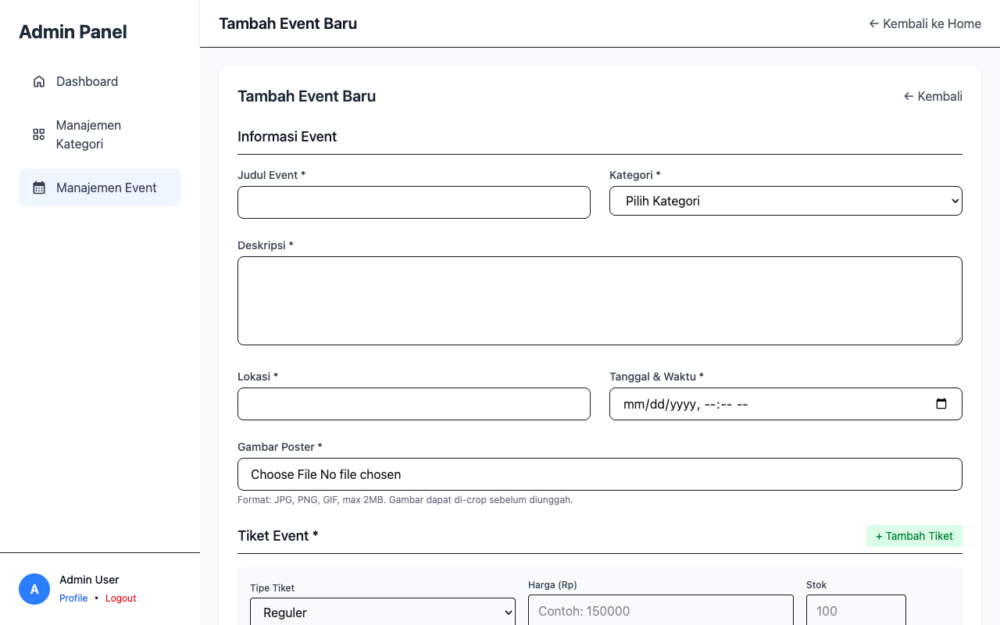
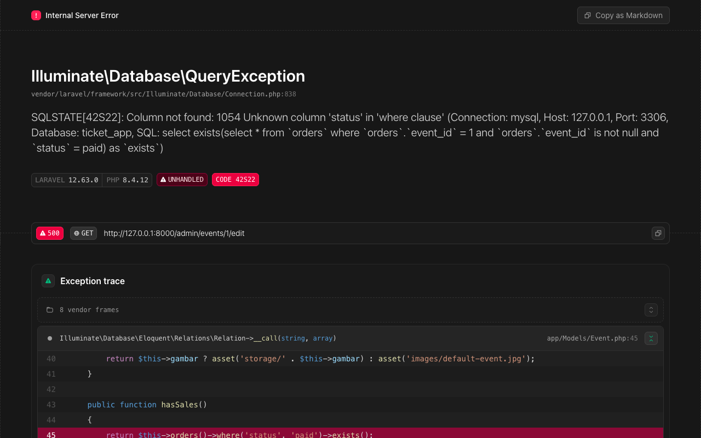
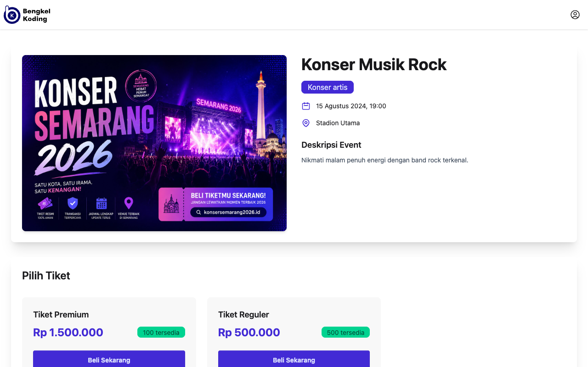
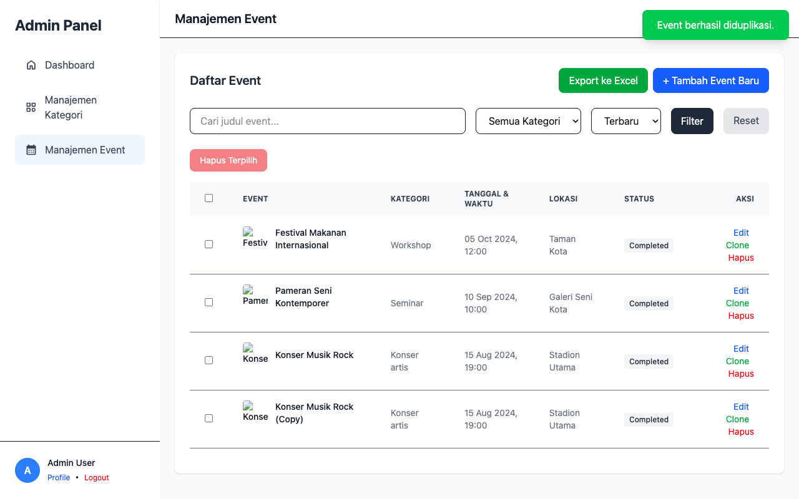

Perhatian Sebelum Print PDF:
1. Tekan Cmd + P (Mac) atau Ctrl + P (Windows/Linux).
2. Pilih Save as PDF dan centang Background graphics.
3. Pastikan untuk menimpa elemen kotak abu-abu di bawah dengan *screenshot* aktual dari sistem Anda, baik dengan cara mengedit kode HTML-nya (mengganti elemen <div class="placeholder-box"> menjadi <img src="...">) sebelum di-*print*.
LAPORAN TUGAS BIMBINGAN KARIR
IMPLEMENTASI FITUR MANAJEMEN EVENT (CRUD & CHALLENGES)
NAMA: MUHAMMAD DICKY AFRIZA
NIM: A11.2024.16000
KELOMPOK: A11.46RPL
1. SCREENSHOT & CARA PENGGUNAAN FITUR (CRUD & CHALLENGES)
A. Halaman Daftar Event (Read, Search, Export, Bulk Delete, Clone)
- Cara Membaca Data & Pencarian (Read & Search): Buka menu "Manajemen Event" di sidebar admin. Semua event akan tampil dalam tabel. Anda dapat menggunakan kotak pencarian di bagian atas tabel untuk mencari event berdasarkan judul, serta menggunakan filter dropdown untuk menyaring berdasarkan Kategori atau Status (Upcoming, Ongoing, Completed).
- Cara Hapus Data (Delete): Klik tombol berlogo tempat sampah warna merah di kolom aksi untuk menghapus satu event secara spesifik. (Akan tertahan jika ada tiket yang terjual).
- Cara Export Excel (Challenge 1): Klik tombol "Export ke Excel" berwarna hijau di bagian kanan atas tabel. File
events.xlsx akan otomatis terunduh berisi semua rekap data.
- Cara Bulk Delete (Challenge 2): Centang kotak (checkbox) pada sebelah kiri baris-baris event yang ingin dihapus, lalu klik tombol "Hapus Terpilih" berwarna merah di bagian atas tabel. Sistem akan menolak menghapus event jika sudah memiliki tiket terjual.
- Cara Clone Event (Challenge 4): Klik tombol hijau bertuliskan "Clone" pada baris event di kolom Aksi. Sebuah event duplikat akan langsung terbuat dengan imbuhan "(Copy)" pada judulnya, beserta semua konfigurasi tiket aslinya.

B. Tambah Event & Dynamic Ticket Form (Create & Image Cropping)
- Cara Menambahkan Event Baru (Create): Klik tombol "Tambah Event Baru" di halaman daftar event. Isi judul, kategori, deskripsi, lokasi, dan tanggal.
- Cara Menambah Tiket Dinamis (Dynamic Ticket): Pada form yang sama di bagian bawah, klik tombol "+ Tambah Tiket". Anda bisa menambahkan lebih dari 1 tipe tiket sekaligus (contoh: Reguler, VIP, VVIP) beserta harga dan stoknya masing-masing. Tekan tanda silang merah untuk membatalkan tiket tertentu.
- Cara Memotong Gambar (Image Cropping - Challenge 3): Klik "Choose File" pada bagian Gambar Poster. Setelah memilih gambar, jendela crop interaktif akan muncul. Sesuaikan area gambar (rasio otomatis 16:9), lalu klik tombol "Gunakan Potongan Ini". Gambar otomatis disiapkan untuk *upload*. Setelah semua terisi, tekan "Simpan Event".

C. Edit Event & Peringatan Penguncian (Update & Status History)
- Cara Mengedit Event (Update): Klik tombol berlogo pensil kuning di kolom aksi pada tabel event. Anda dapat mengubah isi judul, deskripsi, ataupun kategori.
- Cara Melihat Status History (Challenge 5): Riwayat akan otomatis tercatat secara *backend* setiap kali event baru dibuat atau ketika Anda mengedit "Tanggal & Waktu" sehingga rentang statusnya bergeser (misal: Upcoming -> Ongoing). Log ini tersimpan secara mandiri di tabel
event_status_histories.
- Kondisi Penguncian Edit (Locking Mechanism): Apabila membuka halaman edit pada event yang tiketnya *sudah ada yang terjual (dibeli)*, maka kolom tiket dan "Tanggal & Waktu" akan berubah warna menjadi abu-abu (tidak bisa diubah) disertai kemunculan kotak peringatan warna kuning. Anda tidak diizinkan mengubah harga/kapasitas secara sembarangan saat tiket sudah *sold*.

D. Halaman Publik (Tampilan User)
- Cara Melihat Detail Publik: Buka tautan publik event (misal klik judul event di halaman beranda utama). Halaman ini menampilkan detail acara, gambar poster hasil *crop*, dan pilihan tiket yang tersedia. Halaman ini juga memiliki section "Event Terkait" di bagian bawah untuk melihat rekomendasi event dengan kategori sejenis.

2. KENDALA YANG DIALAMI
- Validasi Multi-dimensi pada Tiket Dinamis: Karena satu event bisa memiliki banyak tiket, memvalidasi input *array* dari *form* secara dinamis di sisi server cukup memakan waktu.
- Kondisi Penguncian Data (Locking): Tantangan besar adalah mengatur agar
tanggal_waktu dan tiket tidak bisa diubah ketika tiket sudah dipesan, bahkan apabila batasan pada antarmuka *frontend* berhasil dilewati (di-bypass).
- Integrasi
Cropper.js dengan Unggahan Standar: Output pemotongan gambar berupa elemen *Canvas* atau data *Base64*. Kesulitannya adalah bagaimana mengirimkan potongan ini tanpa merombak logika pengontrol unggahan multipart/form-data yang sudah ada di Laravel.
- Pelacakan Riwayat Status (Status History): Kolom status tidak berdiri sendiri, melainkan dihitung (*calculated field*) berdasarkan
tanggal_waktu (Upcoming, Ongoing, Completed). Melacak riwayat dari sesuatu yang dihitung secara dinamis membutuhkan trik perbandingan yang teliti sebelum dan sesudah objek dimutakhirkan.
3. SOLUSI YANG DITEMUKAN
- EventFormRequest Khusus: Memanfaatkan form *request validation* di Laravel menggunakan notasi bintang (
tikets.*.harga) yang mengecek otomatis tiap nilai di dalam *array* tiket yang dikirim oleh Javascript.
- Interceptor Menggunakan Helper
hasSales(): Solusi *backend* aman dicapai dengan menambahkan fungsi hasSales() pada Model. Pada metode update(), data tanggal akan secara eksplisit dibuang (unset) jika *event* sudah memiliki penjualan, terlepas dari apa pun nilai yang dikirim *user*.
- Manipulasi Objek
DataTransfer: Alih-alih mengubah Laravel, di sisi Javascript *canvas* dikonversi ke *Blob*, dijadikan entitas File, lalu dimasukkan ke struktur objek baru menggunakan konstruktor DataTransfer() untuk menimpa daftar file bawaan *browser* pada *input type file*. Laravel kemudian membaca gambar tersebut layaknya unggahan normal biasa.
- Kondisional Diff pada Model Lama & Baru: Untuk menyimpan riwayat status, Controller akan menangkap nilai
status lama ke sebuah variabel sesaat sebelum $event->update() dijalankan. Apabila perubahan tanggal mengakibatkan nilai properti status baru tersebut berbeda, barulah log akan ditambahkan ke tabel EventStatusHistory.
4. REFERENSI KODINGAN UTAMA
A. Logic Penguncian (*Backend Bypass Prevention*)
// App\Http\Controllers\EventController
public function update(EventFormRequest $request, Event $event)
{
$validated = $request->validated();
// Solusi kendala penguncian tiket: Cegah dari sisi backend
if ($event->hasSales()) {
unset($validated['tanggal_waktu']);
}
$oldStatus = $event->status;
$event->update($validated);
// Pencatatan Status History
if ($oldStatus !== $event->status) {
EventStatusHistory::create([
'event_id' => $event->id,
'status' => $event->status
]);
}
}
B. Penanganan Cropper.js ke File Input
// resources/views/admin/events/create.blade.php
btnCrop.addEventListener('click', function() {
if (cropper) {
cropper.getCroppedCanvas().toBlob((blob) => {
// Konversi canvas murni menjadi Blob, lalu File objek
const croppedFile = new File([blob], originalFileName, { type: "image/jpeg" });
// Override input file dengan instansiasi DataTransfer JS
const dataTransfer = new DataTransfer();
dataTransfer.items.add(croppedFile);
document.getElementById('imageInput').files = dataTransfer.files;
cropContainer.classList.add('hidden');
}, 'image/jpeg');
}
});
C. Implementasi Tantangan (Challenges: Export & Bulk Delete)
// Export
public function export()
{
return Excel::download(new EventsExport, 'events.xlsx');
}
// Bulk Delete
public function bulkDelete(Request $request)
{
$events = auth()->user()->events()->whereIn('id', $request->ids)->get();
foreach ($events as $event) {
// Hanya menghapus yang aman untuk dihapus (tanpa penjualan)
if (!$event->hasSales()) {
Storage::disk('public')->delete($event->gambar);
$event->delete();
}
}
return redirect()->back()->with('success', "Event terpilih dihapus.");
}
5. PENGUJIAN SISTEM (TESTING & VERIFICATION - POIN 7)
Bagian ini membuktikan bahwa seluruh fungsionalitas CRUD dan proteksi aplikasi telah lulus tahap pengujian manual sesuai dengan instruksi Poin 7: Testing & Verification.
Task 7.1: Create Event Test
- Aksi: Membuka
/admin/events/create, mengisi form, mengunggah gambar, dan menambah 2 tiket.
- Hasil: [✓] Data tersimpan di database, [✓] Gambar berhasil di-upload, [✓] Berhasil dialihkan ke halaman index dengan pesan sukses.
Task 7.2: List & Filter Test
- Aksi: Membuka
/admin/events dan mencoba fitur tabel.
- Hasil: [✓] Pagination berjalan, [✓] Pencarian judul berfungsi, [✓] Filter kategori berfungsi, [✓] Sort data berjalan, [✓] Badge status (Upcoming/Ongoing) tampil akurat.
Task 7.3: Update Event Test
- Aksi: Membuka halaman edit event yang baru dibuat, memperbarui data dan menambah tiket baru.
- Hasil: [✓] Form otomatis terisi data lama, [✓] Tiket lama ter-load, [✓] Data dan tiket baru sukses tersimpan setelah disubmit.
Task 7.4 & 7.5: Delete & Protected Event Test
- Aksi (7.4): Menghapus event biasa yang belum memiliki transaksi.
- Hasil (7.4): [✓] Event berhasil terhapus dan sistem menampilkan pesan sukses.
- Aksi (7.5): Mensimulasikan penjualan tiket, lalu mencoba menghapus event yang terkunci (terproteksi).
- Hasil (7.5): [✓] Event TIDAK terhapus, [✓] Muncul pesan error larangan menghapus event dengan tiket terjual.

|